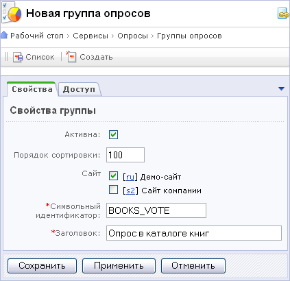
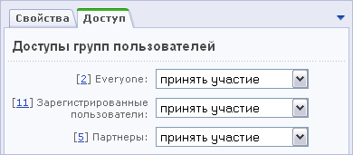
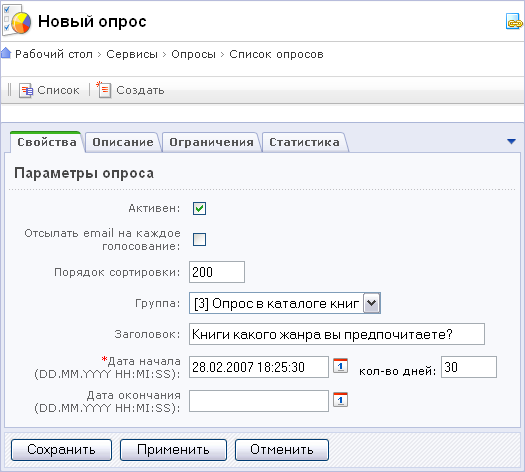
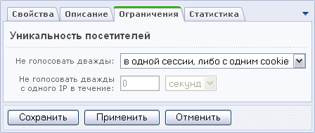
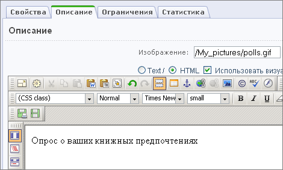
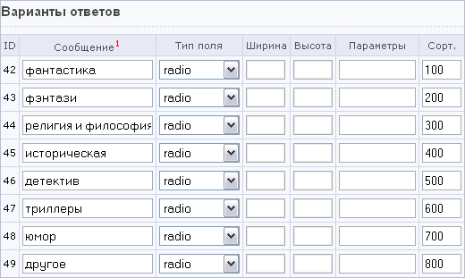

Создание опроса выполняется в несколько этапов.
Создание группы
- Зайдите в административный раздел Группы опросов (Сервисы > Опросы > Группы опросов) и нажмите кнопку Создать. Группа опросов характеризуется тем, что в ее пределах может быть только один активный опрос (регулируется интервалом проведения опросов).

- Отметьте флажком поле Активна, укажите порядок сортировки.
- Выберите язык интерфейса, в котором будут размещены опросы данной группы.
- Обязательно укажите символическое имя группы.
- Распределите права доступа к опросам данной группы.

Создание опроса
- В разделе Список опросов нажмите кнопку Добавить, выбрав группу, в которую будет добавлен опрос.
- Поле Активен отмечено по умолчанию. Если вы не хотите, чтобы опрос был размещён в публичной части сразу после создания, снимите этот флажок.
- Отметьте поле Отсылать email на каждое голосование, если вы хотите получать уведомление о каждом ответе на данный опрос.
- Введите заголовок опроса (заголовок будет показан в публичной части сайта).
- Укажите дату начала, дату окончания и продолжительность опроса. Дата начала опроса устанавливается автоматически (берется дата окончания последнего опроса данной группы + 1 секунда). Дата начала нового опроса не должна пересекаться с датой окончания другого опроса из данной группы.
- Укажите идентификаторы опроса. При каждом голосовании в системе статистики будут учитываться события (event1, 2, 3).

- Установите способ отслеживания уникальности посетителей.

Возможны следующие варианты:
- нет ограничений - уникальность посетителей не отслеживается; каждый посетитель может голосовать по данному опросу неограниченное количество раз;
- в одной сессии - посетитель не может дважды проголосовать по данному опросу в одной сессии, т.е. пока не перезапустит браузер, либо пока не истечет сессия;
- в одной сессии либо с одним cookie – каждому посетителю в момент голосования выдается свой уникальный номер (только один раз), который записывается в cookie посетителя; данная опция не позволяет посетителю голосовать дважды по данному опросу в одной сессии, либо с одним уникальным номером из cookie;
- в одной сессии, либо с одним cookie, либо с одного IP – данная опция не позволит проголосовать посетителю дважды по данному опросу в одной сессии, либо с одним уникальным номером, либо с одного IP-адреса (необходимо учесть, что если посетитель подключается к Internet через модем (dial-up), то в большинстве случаев при каждом новом подключении ему выдается новый IP адрес).
Если вы выбрали не голосовать дважды в одной сессии, либо с одним cookie, либо с одного IP, то вам необходимо учесть, что пользователи, находящиеся в локальной сети (LAN) какой-либо организации, имеют как правило один внешний IP-адрес. Другими словами, если какой-либо пользователь данной LAN уже проголосовал, то больше никто уже не сможет участвовать в данном опросе. Поэтому вам необходимо задать интервал времени, в течение которого модуль опросов не позволит голосовать дважды с одного IP-адреса.
- Загрузите изображение, которое будет размещено в публичной части сайта в списке опросов.
- Добавьте описание опроса. Вы можете использовать HTML-редактор, добавить HTML-код или обычный текст.

- Выберите шаблоны формы и результатов опроса. Используйте ссылку выбрать для просмотра шаблона оформления опроса.
- Нажмите кнопку Добавить, чтобы сохранить новый опрос и перейти к списку опросов. Используйте кнопку Применить для того, чтобы сохранить изменения и продолжить редактирование опроса.
Настройка параметров опроса
- Откройте список опросов. Напротив нужного опроса нажмите ссылку Вопросы или +, чтобы добавить новый вопрос.
- Укажите, активен ли опрос, установите порядок сортировки.
- Отметьте поле Включить в диаграмму результатов, чтобы ответов на данный вопрос были включены в результаты по всему опросу.
- Выберите шаблон показа результатов.
- Вы можете загрузить изображение, которое будет размещено в публичной части сайта рядом с данным вопросом.
- Добавьте текст вопроса и варианты ответов.

Типы полей (для ввода ответов):
- radio – радио-кнопка; можно выбрать только один вариант ответа из группы ответов с таким типом поля;
- checkbox – флаг; можно выбрать несколько вариантов ответов;
- dropdown – элемент с выпадающим списком; можно выбрать только один вариант ответа; все элементы, имеющие данные тип поля, будут собраны в один выпадающий список;
- multiselect – список с возможностью множественного выбора; все элементы, имеющие данный тип поля, будут собраны в один список;
- text – однострочное поле ввода, в которое посетитель может добавить ответ;
- textarea – многострочное поле ввода, в которое посетитель может добавить ответ.
- Нажмите кнопку Добавить.
Вы можете просмотреть общие данные по ответам респондентов, нажав на ссылку Результаты в списке опросов.
Раздел Посетители содержит информацию о всех респондентах. В разделе Голосования можно просмотреть результаты голосования каждого респондента отдельно.